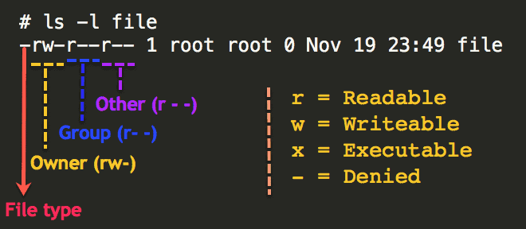

Linux & Terminal Essentials
Stavros Panakakis | Web Developer | CS Student at Ionian University
Τι είναι το Linux;
- Δωρεάν
- Βασισμένο στο UNIX
- Ανοιχτού κώδικα
Πως δημιουργήθηκε το Linux;

Linux Foundation Platinum Members
500000$ / τον χρόνο
Αντίκτυπος
- Το Android είναι βασισμένο στο Linux
- ~70% όλων των Websites τρέχουν Unix & Linux
Φιλοσοφία του Unix
"Minimalist, modular software development"
Linux vs Windows
Linux
Δωρεάν
Ανοιχτού κώδικα
Γρήγορο
Ασυμβατότητα
Windows
Ακριβά
Κλειστού κώδικα
Πιο αργό
Συμβατότητα
Dual Boot

Linux? Dual Boot?
ΔΕΝ ΕΙΜΑΙ ΧΑΚΕΡ!
Μύθοι και Αλήθειες
Μύθοι και Αλήθειες
- Είναι δύσκολη η εγκατάστασή του
Μύθοι και Αλήθειες
- Είναι δύσκολη η εγκατάστασή του
- Δεν είναι ασφαλές
Μύθοι και αλήθειες
- Είναι δύσκολη η εγκατάστασή του
- Δεν είναι ασφαλές
- Είναι μόνο για εξειδικευμένους χρήστες
Debian
Ubuntu
Linux Mint
Pop!_OS
Arch Linux
Manjaro
ArcoLinux
Archlabs
Red Hat Linux
CentOS
Fedora
ClearOS
Package managers
Debian, Ubuntu. Mint...
➜ sudo apt install python
Arch, Manjaro...
➜ sudo pacman -S python
Fedora, CentOS...
➜ sudo yum install python
Desktop Environments
Gnome
KDE
Xfce

Cinnamon
Custom
Community
https://unix.stackexchange.com/
https://forum.manjaro.org/
https://askubuntu.com/
Filesystem

Filesystem
Files
Case sensitive
(file.txt != File.txt)
.dotfiles (Hidden)
Directories
Windows Folders
Pathnames
Absolute
From root
/home/user/projects
/usr/bin/pip
Relative
From current directory
Current Directory ( . )
Parent Directory ( .. )
Βασικά Commands
| mkdir | Δημιουργεί καινούριο directory |
|---|---|
| cd | Αλλάξει directory |
| pwd | Κάνει print το όνομα από το τρέχων directory |
| ls | Κάνει print μια λίστα με τα files ενός directory |
| cp | Κάνει copy files και directories |
| man | Εγχειρίδιο των commands |
| grep | Κάνει print γραμμές που να ταιριάζει στο μοτίβο |
| cat | Κάνει print ένα αρχείο στο terminal |
Flags & Arguments
Κάνει αντιγραφή files και directories
Κάνει print μια λίστα με όλα τα files ενός directory
➜ ls -A <directory>
Pipes
main#include <stdio.h> int main() { // printf() displays the string inside quotation printf("Hello, World!"); return 0; }
➜ cat main | grep "Hello"
Output : printf("Hello, World!");
Redirection
Κάνει redirect το output του ls στο last_filels > list_file
Permissions
Types
r - Read
w - Write
x - Execute
Sets
u - User
g - Group
o - Others
Superuser
➜ sudo apt install python3
Permissions
Permissions
➜ chmod [ugo][+-=][rwx] "file"
➜ chmod o-rw "file"